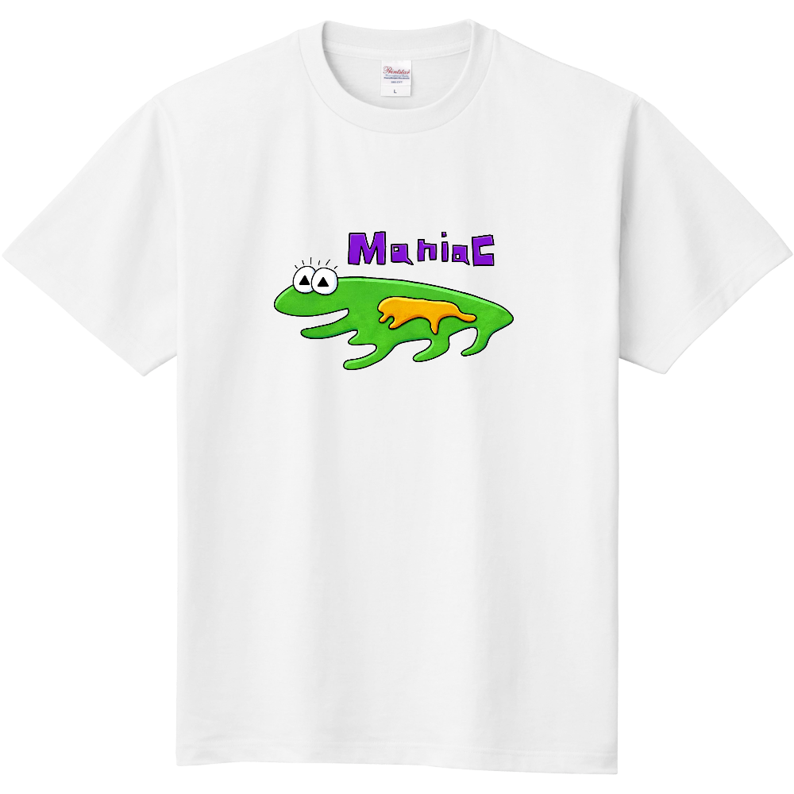

人とかぶらない
変だけど、ちゃんと着られる。そんな絵柄をつくります。

WEIRD &
WONDERFUL
ABOUT US
田舎兄弟は、ゆるいのに忘れられない絵柄のTシャツ屋です。
人と同じじゃつまらない。そんなあなたの日常に、ちょっとした違和感と笑顔を届けます。
変だけど、ちゃんと着られる。そんな絵柄をつくります。
いつもの服に、気の抜けた個性を足してみよう。
PICK UP ITEM
¥4,000 （税込）
緑の四足歩行キャラクターと、大胆な「MANIAC」の文字。見るほどにじわじわ来る、田舎兄弟の定番Tシャツです。
UP-Tで購入する ↗今日もどこかで、
変なTシャツを着よう。